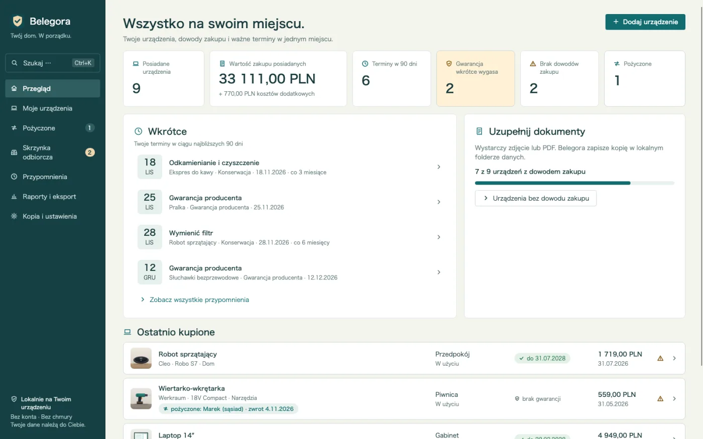
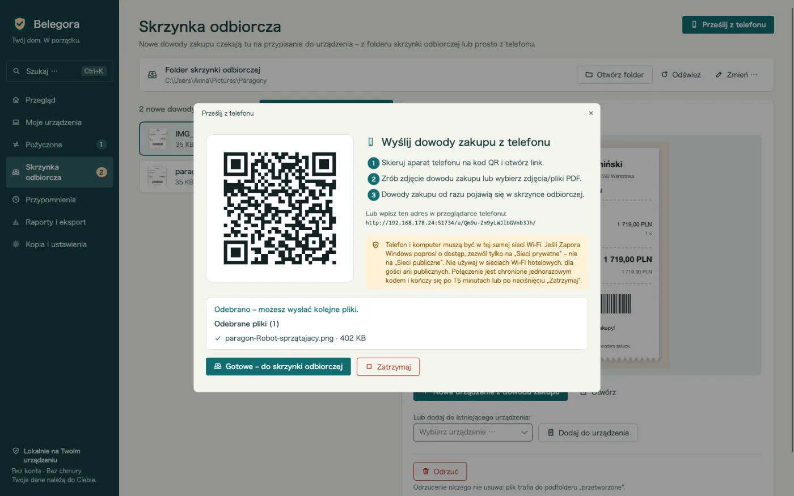
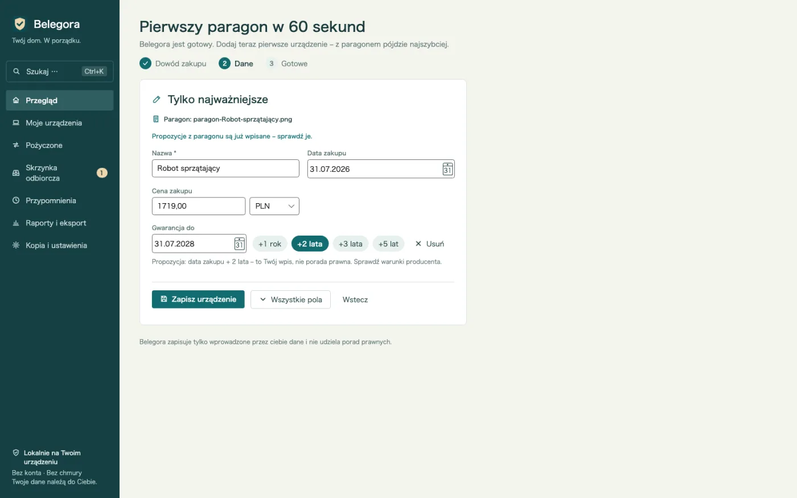
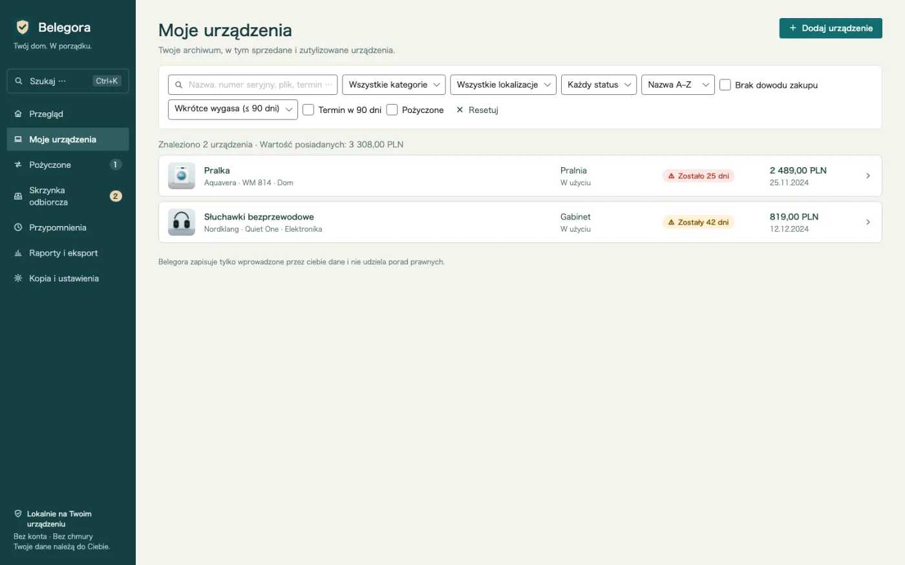
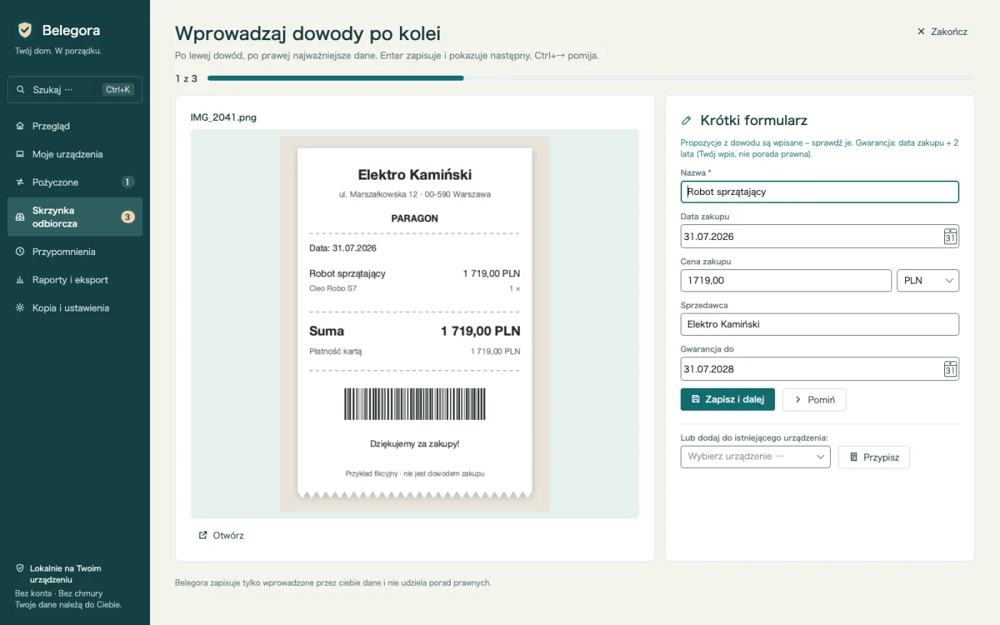
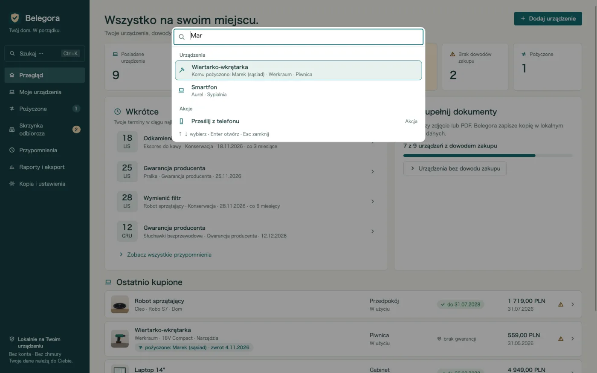
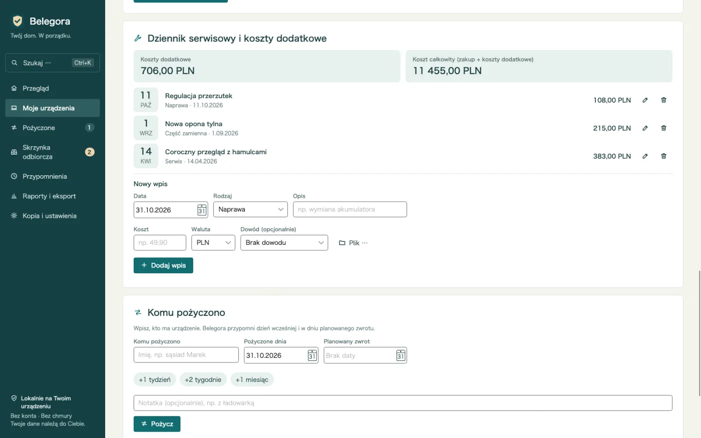
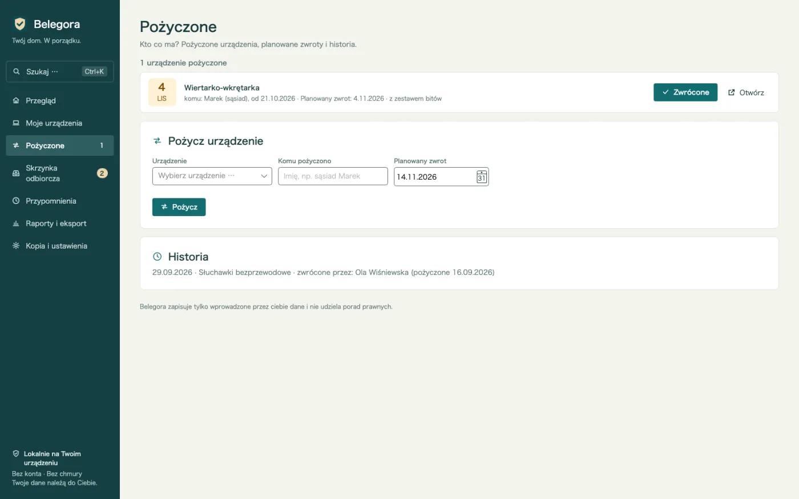
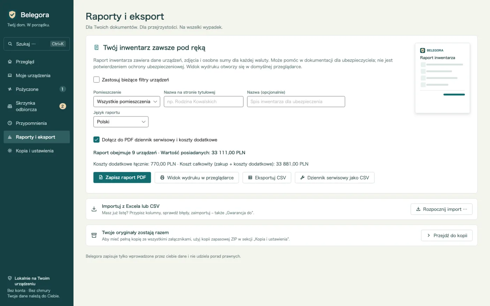
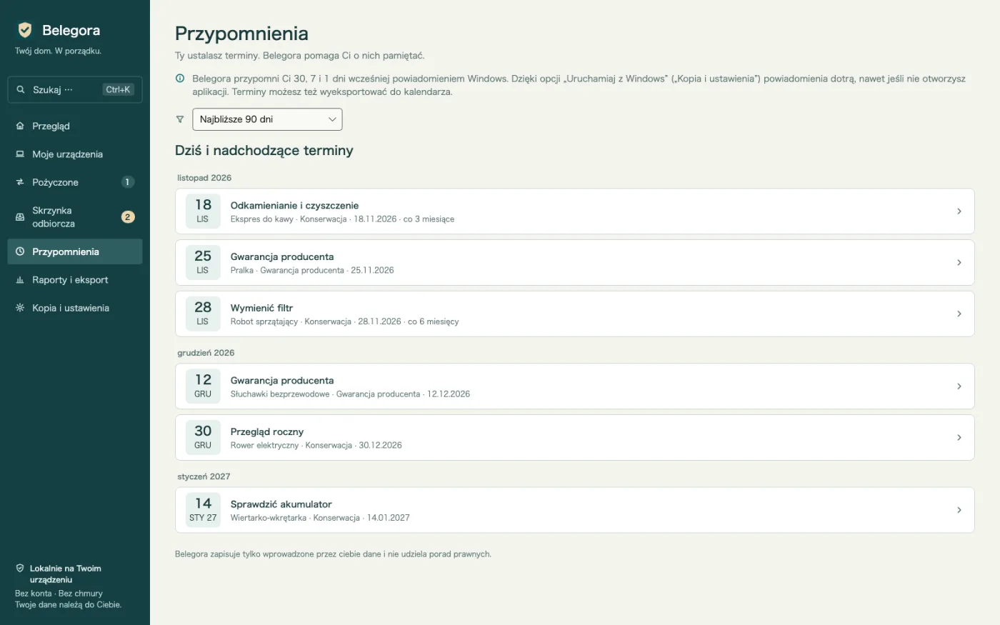

Przypomnienia przed terminami
Gwarancja, zwrot, ubezpieczenie, serwis: Belegora pokazuje powiadomienie Windows z wybranym wyprzedzeniem.
Archiwum gwarancji i paragonów dla Windows
Bateria padła po 20 miesiącach? Paragon, numer seryjny i data gwarancji w kilka sekund. Paragony z telefonu przez kod QR, przypomnienia przed Twoimi terminami i PDF dla ubezpieczyciela. Offline, bez konta.

Belegora zajmuje się żmudną częścią: zbiera paragony, podpowiada dane i przypomina przed terminami.
Gwarancja, zwrot, ubezpieczenie, serwis: Belegora pokazuje powiadomienie Windows z wybranym wyprzedzeniem.
Zeskanuj kod QR i wyślij zdjęcie z przeglądarki. Paragon trafia przez Wi-Fi do skrzynki. Bez kabla, chmury i aplikacji.
Data zakupu, kwota i sklep są podpowiadane z paragonu. Sprawdzasz, zapisujesz, a sprzęt powstaje jednym kliknięciem.
Lista sprzętu od razu pokazuje, gdzie gwarancja wkrótce wygasa, z kolumną „Gwarancja do”.
Znajdź każde urządzenie po nazwie, numerze seryjnym, sprzedawcy, tagu, pliku lub osobie, której je pożyczono, oraz akcje jak PDF czy kopia zapasowa – z klawiatury.
Wiele paragonów po kolei: po lewej paragon, po prawej krótki formularz z propozycjami. Enter zapisuje, Ctrl+→ pomija.
Zapisuj naprawy, serwisy, części zamienne i akcesoria z kosztami. Koszty dodatkowe i całkowite każdego urządzenia, także w PDF i CSV.
Kto ma wiertarkę? Komu, od kiedy, planowany zwrot – z przypomnieniem i historią. Do tego raz w tygodniu podsumowanie.
Po zalaniu lub kradzieży: raport ze stroną tytułową, zestawieniem według pomieszczeń, sumami, zdjęciami i paragonami. Język raportu do wyboru.
Przenieś swoją listę z przypisaniem kolumn. Eksport do CSV, terminy do ICS dla każdego kalendarza.
Kopie z załącznikami tworzą się automatycznie. Przywracanie pokazuje podgląd.
Bez chmury, konta, reklam i śledzenia. Dane zostają na Twoim komputerze.
Warto wiedzieć: Belegora przechowuje Twoje dane i terminy i nie udziela porad prawnych. Powiadomienia pojawiają się, gdy Belegora działa; aplikacja może uruchamiać się z Windows. Rozpoznawanie tekstu korzysta z OCR Windows i wymaga odpowiedniego pakietu językowego Windows.
Wyślij zdjęcie z telefonu przez QR, wrzuć plik do folderu wejściowego lub zaimportuj listę z Excela.
Belegora podpowiada datę, kwotę i sklep. Dodaj sprzęt, ustaw termin i wyprzedzenie.
Belegora przypomni na czas. W razie szkody raport dla ubezpieczyciela zrobisz w kilka minut.









14,99 €
jednorazowo, cena w Niemczech
Już dostępne w Microsoft Store. Ceny w innych krajach mogą się różnić.

Tylko Ty. Belegora nie wysyła danych do nas ani nikogo innego; bez konta i telemetrii. Przesyłanie z telefonu działa tylko w sieci lokalnej.
Lokalnie na komputerze w folderze danych aplikacji (%LOCALAPPDATA%\MinhStudios\Belegora), razem z kopiami załączników i automatycznymi kopiami.
Utwórz kopię w Belegora (ZIP ze wszystkimi danymi i załącznikami), skopiuj ją na nowy komputer, zainstaluj Belegora i przywróć kopię. Podgląd pokazuje, co zostanie przywrócone.
Nie. Belegora przechowuje dane i terminy i nie udziela porad prawnych. O roszczeniu decyduje sprzedawca, producent lub ubezpieczyciel.
Powiadomienia pojawiają się, gdy Belegora działa; aplikacja może uruchamiać się z Windows. Terminy możesz też wyeksportować jako ICS do kalendarza.